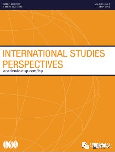

收录于合集

简 介
【作者】 Fiona B. Adamson，目前任职于伦敦大学Department of Politics and International Studies，研究领域包含国际关系理论、跨国身份政治、国际和平与安全、国家治理、移民议题等。
Gerasimos Tsourapas，目前任职于伯明翰大学Department of Political Science and International Studies，研究着重于中东地区的移民、难民议题。
【编译】 高嘉琳
** 【审校】** 崔宇涵、汪琪茜
【来源】 International Studies Perspectives (2019)20, 113-128
【期刊】 International Studies Perspectives成立于2002年，目前是由牛津大学出版社代表International Studies Association季度出版的学术期刊。本期刊关注国际关系研究，出版Policy Research and Commentary、Pedagogical Analyses、Visions of the Discipline、Pieces of Interest to the International Studies Profession四大种类的文章。

国际政治中的移民外交
Migration Diplomacy in World Politics
内容提要
目前就移民、难民危机议题的讨论，并未注重跨境人口流动对于国家外交策略的重要性。本文将 以「移民外交」作为基本分析概念，区分「移民外交」指涉范围与其他移民相关政策。 移民外交关注国家利益、权力如何影响国际关系场域下的人口迁移机制（migration system）的调整，亦即在 怎样的情况下一国可以被认定为移民输送国（ migration-sending states）、接收国（migration-receiving states）或过境国（transit states）。后又讨论 移民议题如何与其他国家利益如安全、经济、软实力或公共外交等相互影响。 最后，本文 借由绝对利益或相对利益观点为基础的移民外交策略，检视各国在国际关系场域上谈判行为的差异。
正文
**1
**
** 移民外交：定义及要件**
** Migration Diplomacy：Definitions and Scope Conditions**
就如同国家双边或多边外交关系中战争、贸易、经济、文化、环境、人权等议题， 移民对于外交事务的重要性也大幅提升 。例如政府间就鼓励、限制移民潮（migratory flows）所签订的协议；特定国家公民相关优惠政策；外籍劳工（或客工，guest- worker）、专业临时人员（temporary labor）移民方案订定；就驱逐外国公民所作讨论。虽说国际上不乏就外交政策及人口流动间相互作用的讨论，部分学者曾从难民庇护、边界冲突、难民合法地位等层面探讨此议题，然大多仅着墨于经济合作暨发展组织（Organization for Economic Co-operation and Development, OECD）成员国移民状况。
本文将讨论 「移民外交（ migration diplomacy）」一词何以用于描述国家处理跨境人口流动的外交工具、过程及程序。厘清移民外交实际意涵，对于其所指涉之事件范围的理解显得至关重要，因并 非所有治理移民潮的企图皆构成移民外交，和移民议题相关的任何讨论也未必属于移民外交所着眼范畴 。此外，也必须注意 各国利用外交工具处理移民事务的能力，仰赖何种国家实力、可利用资源等因素 的情形。
本文提出之移民外交的三大定义要件：
一、移民外交是为 以国家作为行为体，检视跨境人口流动和国家外交目的间的互动关系。 因此，尽管国际上各组织可能采用与国家相似的行为模式，移民外交的行为主体并不涵盖国际组织、媒体、民间团体所应用策略对于移民议题的作用。全球化虽然多少限缩了国家主权，然而就跨境人口移动的相关规定仍保有其主动权。
二、 **一国移民外交不等同于其移民政策 ——有时移民政策会对人口移入加诸许多限制，但唯有国家将这些政策视为其对外关系、外交行为的一部分，才得以被认定为移民外交。**举例而言，最基本移民政策如签证申请、边境管制、难民政策及庇护政策，皆非移民外交的例证。外交大多不离交涉，移民外交则关注各国如何在国际关系场域中协调跨境人口移动；或各国如何利用外交手段达成其在移民议题上的目的。换言之，移民外交的核心是各国如何在国际关系实现对人口流动的管理以及如何利用外交手段实现与移民有关的目的。
三、移民外交强调 将跨境人口移动视为国际性议题的重要性 ——因此，探讨移民外交时须要尽可能排除以下因素： 国内政治 ； 国内流离失所者 ； 移民身份认定、拥有权利的相关规范 ； 难民享有福利 等， 唯有在其影响了多边关系的条件下，才得以被认定属于移民外交的范畴。 举例而言，在特定条件下，有些国家会将涉及散居者的政策制度化，以促进国内经济发展。 国内流离失所者为当今重大的国际移民问题 ——每年上百万人因冲突、暴力、自然灾害面临失其居所的困境——然而此议题经常被视为不与移民外交相关。
**
**
**2
**
国家权力及利益：移民外交中的接收国、输送国及过境国
State Power and Interests：Sending，Receiving，and Transit States in Migration Diplomacy
一国的移民外交如同传统外交，行为模式皆受国家间利益及现存权力关系所型塑。 在移民外交的架构下，将是否接收、遣送移民或拥有过境政策作为划分国家的依据——亦即，移 **民外交的关注核心为移入移民（ immigraion）、移出移民（emigration）及过境移民（transit migration）三者，**前述三种情形须被清晰辨别；且一个国家有可能在作为一国移民接收国的同时，在其他双边关系中作为移民遣送或过境国。
后本文作者分别就接收、遣送、过境国三种状况探讨：第一种移民外交情形—— 「 接收国（ Receiving states） 」 ，关注于移入移民的相关事务 。举例而言，美国目前收容的移入移民数占世界首位，据估4700万人，世界人口数五分之一。而华盛顿也因此订定繁复外交架构（Diplomacy framework）处理相关事宜，尤墨西哥、中南美洲地区移民为要。第二种移民外交情形—— **「输送国（ Sending states）」，关注于移出移民的相关事务。移民外交（此处指移出移民）可借由国家过去或近年政策来断定；又通常来说，实行移民政策（此处指移出移民）的国家坐落于南半球。**举例而言，埃及便为阿拉伯世界中向世界输出劳动力占比最大的国家，且其移民政策（此处指移出移民）大致分为两大时期：首先为1950到1960年代，纳赛尔总统（President Gamal Abdel Nasser）执政下，基于政治意图提倡教师、律师及其他高技术劳工往阿拉伯世界国家发展，以在各国推动支持埃及的思潮；再者是1970年代后，安瓦尔·萨达特总统（President Anwar Sadat）往阿拉伯世界产油国家输送劳动力，以期重塑与海湾国家间的外交关系。 **第三种移民外交情形 ——「过境国（Transit states）」，既非移出移民母国，亦非移入移民的目的国。这些国家之所以成为移民外交的一环，通常是基于其地理位置对于人口流动的重要性。**举例而言，墨西哥的移出移民大多都以成为美国移入移民为目标，缘于其地理位置优势，墨西哥更成为中南美洲欲移入美国的移民重要的中转地区，因而构成其过境国的地位。
**3
移民外交与议题的交互作用
Issue Linkages and Types of Migration Diplomacy
前述例子显示一 国移民政策经常与特定议题相互影响，并且移民政策也可以作为国家达成特定目标的手段 ，例加强国家安全，推动经济发展，利用文化、公共外交（public diplomacy）增强国家软实力等。 国家也有可能基于国内安全，欲驱逐、转移部分人口或团体，决定利用移民政策达到此目标。 历史上也有一些国家 将移民政策作为谈判筹码 的案例，例1991年的和平谈判（peace negotiations），埃塞俄比亚以国内约1万4000名犹太人移出移民的批准作为交换，向以色列要求军事援助及3600万的资金援助再者移入移民相关政策也有可能随接受国基于国家安全目的的改变而有所调整，如双边引渡条约作为遣送有犯罪、恐攻嫌疑者出境的方式之一。
此外，移民政策也可以被使用于达成经济目的，以新加坡为例，其国内的移民总人数为东南亚第一，利用移民政策来招募外国技术移工、移民。最后，国家也不时会利用移民政策来推动公共外交——作为增进软实力，促进文化交流的工具。例如在冷战时期，美国将共产主义国家和非共产主义国家的难民和寻求庇护者区分开来，而来自苏联和古巴等其他地方的难民发挥了宝贵的宣传作用。
**4
移民外交的谈判策略：相对、绝对利益
Migration Diplomacy Bargaining Strategies：Relative and
Absolute Gains
针对国家移民外交与安全、经济等议题的交互作用作讨论后， 作者在此段讨论一国将移民外交作为谈判筹码的策略的情况 。移民外交应与国家总体外交状况相似，可能有两种情形——零和、正合两种策略，前者关注相对利益，后者则关注绝对利益。采用零和相对利益观点的移民外交，以1966年的古巴调整法案为例（Cuban Adjustment Act），承诺美国在居古巴人超过一年者永久居住地位；而采用正和绝对利益观点的移民外交，则可以冷战时期，苏联为增强与俄罗斯之间的政治、经济纽带，施行短期高技术人才移出至苏联东部的策略为例。
本段重点在于，各国基于外交政策利益、政策议价能力、双边关系等要素，将有可能在移民外交上采用不同策略以达其目的。 以土耳其为例，与欧洲国家间的移民外交策略在不同时期亦有转变。1960年代与1970年代间，土耳其为解决失业问题及期望促进外汇流动率，在和欧洲各国的劳工协议上追求的是绝对利益；到了2015、2016年间，因土耳其企图利用移民问题来促进自身利益，而与欧洲国家间的敌意渐浓。
**5
** 结 论
Conclusion
无论从行为主体或策略层面，移民外交可谓复杂的政策过程。 本文介绍判别跨境人口流动、国家权力及利益、多边谈判和外交间关系的基本架构，提及移民外交的定义及要件、理论及实际案例 。将移民外交作为一概念，是期望能够判别出跨境人口流动的多种可能影响——不仅由国内政治角度的观点出发，更以国际关系的角度解读。
_ ** _ 本文由国政学人微信平台独家编译首发**
更多阅读
【重磅速递】约瑟夫·奈：美国霸权的兴衰：从威尔逊到特朗普 | 国政学人
【重磅推荐】巴里·布赞：英国学派视角下的中国崛起 | 国政学人
【重磅速递】米尔斯海默：注定失败：自由主义国际秩序的兴衰 | 国政学人
【国际组织】IO杂志：联合国维和行动的武力运用问题研究 | 国政学人
【国际秩序】为什么自由主义国际秩序理念将美国外交政策引入歧途？| 国政学人
【关系理论】“关系”：世界政治关系理论的中国话语 | 国政学人
【百年国关】历史在国际社会中的应用：从巴黎和会到现在 | 国政学人
【英国学派】张勇进：中国与全球国际社会中的自由主义等级制：实力与对规范变迁的协商 | 国政学人
【地区秩序】论经济实力的可转化性：中国经济崛起与东亚安全秩序 | 国政学人
【中俄关系】不得已的伙伴：系统-单元动态与中俄关系 | 国政学人
【IPE研究】美国对外贸易政策的“1934年体制”是如何形成的？ | 国政学人
【现实主义】斯蒂芬·沃尔特：傲慢的终结与美国克制的新时代 | 国政学人
【理论批判】系统、层次与结构理论：沃尔兹的理论并非系统理论 | 国政学人